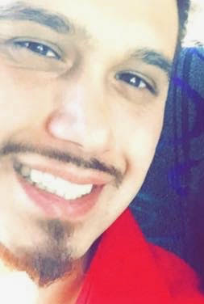

About Me
Bay Area native born and raised - I am thankful for my family and for the time and place where I was raised. As a Filipino-American the Bay Area is and always be a home close to my heart. I love the culture where I live, and intend to raise my kids in or near Silicon Valley/Bay Area.
In 2012, I graduated from the University of San Francisco with a BA in Politics. My extracurricular activities and hobbies include martial arts, music and flying. In college I competed on the USF collegiate boxing team for 2 years and currently teach Filipino Martial Arts and boxing at an MMA gym in Concord, CA. I enjoy many genres of music including rap, rock and classical music; I play guitar, piano and violin as a soloist. At age 19, I earned a commercial pilot license after graduating from Pacific States Avaiation Flight Academy, which I attended in tandem with my high school studies.
My personal beleifs include Gnositicism - an original faith that no longer has an active church. The first gnositcs modeled their faith after the life of Jesus Christ prior to the founding of the Roman Catholic Church. I also have tremenduous faith in science and human ingenuity, and beleive that if these are driven by altruistic members of humanity - we can indeed make our future bright and full of hope for generations to come.